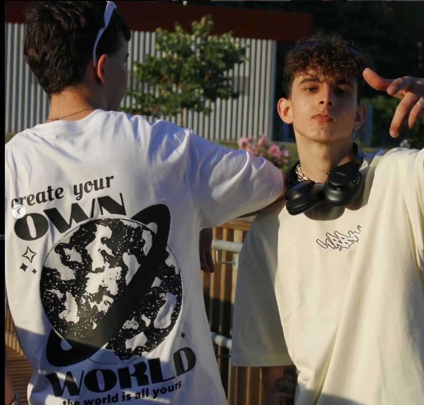

UrbanCities
Todo lo que necesitas saber
Introducción
Artículos
Lateral
Introducción
Empezamos con UrbanCities, una marca de moda joven fundada por dos amigos en Sevilla, con el objetivo de crear prendas únicas y de calidad, mezclando lo urbano con un toque elegante, reflejando el espíritu juvenil y auténtico de sus fundadores.
Creadores y datos
UrbanCities fue fundada por Manuel Vega y Mario Domínguez en verano de 2024. Poco a poco la marca va creciendo, pues es algo reciente y necesita tiempo para llegar a más gente a los que les guste un estilo a lo Urban.
